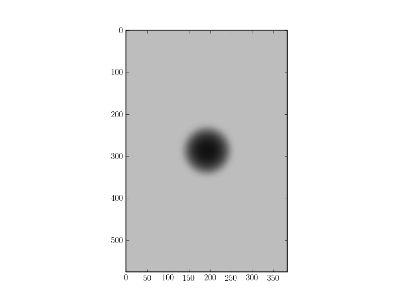
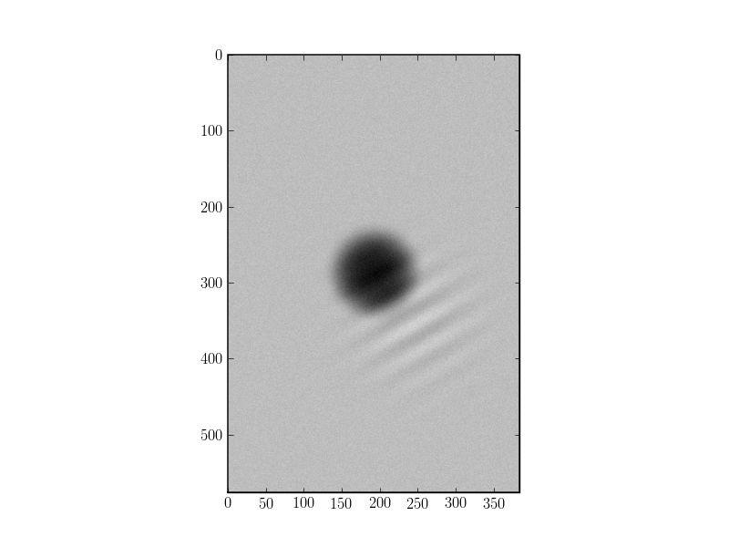
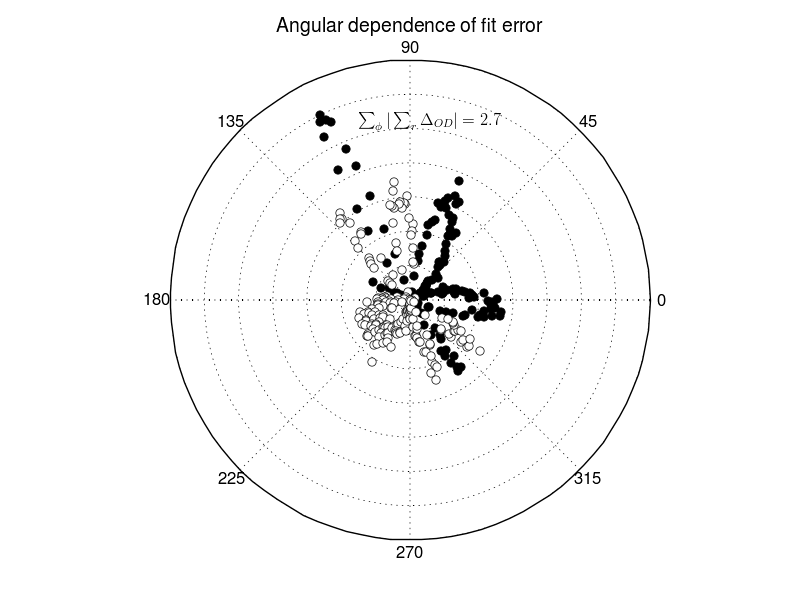

Generation of reference images¶
We are interested in generating reference images from analytical expressions for the density distribution of atoms in a trap or in time-of-flight (TOF), in order to test our fit routines, get an idea of the effect of various types of noise, and to see for what experimental parameters we get useful data. We can generate transmission images, i.e. the same type of images we get from our experiment, from either the fugacity, radial size and TOF or from T/T_F, number of atoms and TOF.
To create an image we can do for example:
1 2 3 4 5 | import odysseus.refimages as refimg
# T/T_F = 0.1, N = 5e6, TOF = 3 ms
central_od, a, bprime = refimg.idealfermi_fitparams(0.1, 5e6, tof=3e-3)
img = refimg.generate_image(ODmax=central_od, fugacity=a, cloudradius=bprime)
|
And then to plot the image:
1 2 3 4 5 6 | import pylab
fig1 = pylab.figure(1)
ax1 = fig1.add_subplot(111)
ax1.imshow(img, cmap=pylab.cm.gray, vmin=0, vmax=1.35)
pylab.show()
|
This should give the following result:
{kind=link}
Adding noise¶
We can add various types of noise to an image with the add_noise function:
- odysseus.refimages.add_noise(img, ampl=0.050000000000000003, noisetype='random', fringeargs=None)¶
Noise is added to an image.
Inputs
- img: 2d array, containing image data
- ampl: float, amplitude of the noise
- noisetype: string, value can be one of
- ‘random’, adds unbiased white noise
- ‘linear_x’, adds a linear gradient along x from 0 to ampl
- ‘linear_y’, adds a linear gradient along y from 0 to ampl
- ‘fringes’, adds fringes with parameters fringeargs
- fringeargs: sequence, containing four values
- angle: float, angle of fringes in radians with respect to the x-axis
- freq: float, frequency of the fringes in pixels^{-1}
- pos: tuple, central position of the fringes with respect to the CoM
- size: float, size of the Gaussian envelope of the fringes
Outputs
- img: 2d array, the input image with noise added to it
To generate random noise plus fringes we can for example do:
1 2 3 | fringeargs = (np.pi/3, 0.03, (60, 50), 70)
img2 = add_noise(img, ampl=0.1, noisetype='fringes', fringeargs=fringeargs)
img2 = add_noise(img2, ampl=0.1, noisetype='random')
|
This should give the following result:
{kind=link}
Effects of noise on fit results¶
It turns out that the fit results are quite sensitive to errors in normalization. A few percent one way or another in the tail of the radially averaged density profile can mimic the effect of quantum degeneracy or make it look like a very hot cloud. Ideally we want to make sure the density profile is really zero at the edge, and then normalize after radial averaging. When we have non-uniform normalization noise over the ccd then it becomes a tough problem of course.
Uniform white noise added to the transmission image does not seem to be that much of a problem, unless the amplitude becomes large (>5%). The main effect is to reduce the optical density in the center of the cloud (if OD > 1.5), but this part of the density profile is not usually taken into account when fitting.
Validity of radial averaging¶
We do the radial averaging by first finding the center of mass (CoM), then drawing circles around it, picking points on these circles and then determining the value of the image at each of those points by a bi-linear interpolation on the four pixels surrounding them. This procedure can be invalidated by either noise in the image or by the cloud not actually being radially symmetric. The latter can for example be caused by stray magnetic fields that influence the expansion out of an optical trap.
The purpose of the lineprofiles() function is to generate radial line profiles and compare those with the radially averaged profile we use for fitting. It can generate plots for the sum of differences between raw and averaged data as a function of angle, as shown below for a generated image with only random noise.

The black data points represent negative sums, the white ones positive sums. There seem to be no systematics in the error sums, therefore we can conclude that radial averaging is a valid procedure for this image.
We can check the error sums for generated images with various types of noise, such as random noise, linear background slopes, fringes and combinations of all these. We find that without normalization with normalize_img() the background slopes invalidate the radial averaging. With normalization we only have a problem when there are fringes that overlap with the atoms. This means it is important to clean up the imaging beam profile and use an aperture to select only the useful part of the beam.
Result for image with random noise, linear slopes and strong fringes partly overlapping the atoms:
{kind=link}
Elliptical averaging¶
It turns out that at low temperatures and magnetic fields of around 560 G, the expansion of the atom cloud is slow enough that we can observe an asymmetry between the horizontal and vertical directions in the image. This is due to imperfections in the coils and to gravity, and leads to faster expansion in the vertical than in the horizontal direction. Therefore we need to average elliptically instead of radially. We can do this by specifying the elliptic parameter in fit_img() or radial_interpolate(). This has to be a tuple with two elements, the first gives the ellipticity (or aspect ratio) and the second the angle of the axes of the ellipse with respect to the image axes. The plots of residuals of radial profiles, as above, let us then determine the ellipticity with an accuracy of about 1%.